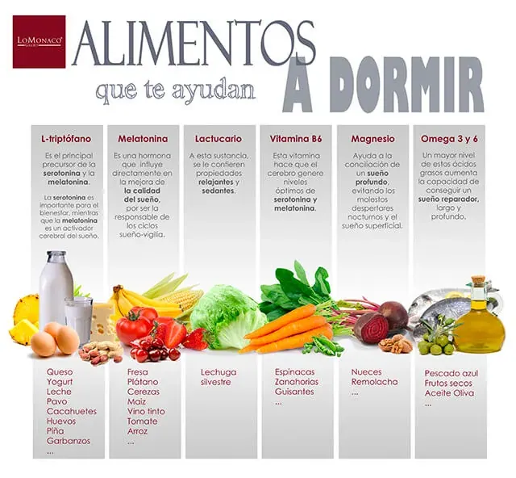

Alimentos que ayudan a dormir

L-triptófano: Que palabreja ¿no? Pues resulta ser un aminoácido natural precursor de la serotonina y la melatonina. Una de de las funciones de los aminoácido en el organismo es la de regulación de hormonas. El triptófano es captado en el cerebro humano por las neuronas serotoninérgicas que lo transforman en serotonina que a su vez, es precursora de la melatonina. La serotonina es importante para el bienestar, mientras que la melatonina es un activador cerebral del sueño o, lo que es lo mismo, es la encargada de regular los ciclos de sueño-vigilia. Así se empieza a liberar cuando disminuye el fluyo de iluminación (durante la noche) y su acción es la responsable de la conciliación del sueño.
Los alimentos ricos en triptófano son: el queso, yogurt, leche, pavo, almendras, cacahuetes, huevos, piña, cereales integrales y garbanzos. Consumidos tres horas antes de acostarse en cantidades no copiosas, favorecen el dormir bien.
Melatonina:Acabamos de hablar de ella, vamos a profundizar un poco más en su mecanismo de síntesis y actuación. Se trata de una hormona que se produce en la glándula pineal y que parece influir en la mejora de la calidad del sueño, además de ser la responsable de los ciclos sueño-vigilia. De forma natural la encontramos en los siguientes alimentos: fresa, plátano, cereza, maíz, vino tinto, tomates, arroz…etc.
Calcio: El calcio está estrechamente relacionado con la activación neuronal que controla el mantenimiento y evolución de las fases REM y No REM del sueño. Puedes encontrarlo en los lácteos y el sésamo.
Lactucario:La lechuga silvestre contiene esta sustancia, a la que se le confieren propiedades relajantes y sedantes.
Vitamina B6: Ayuda también a que el cerebro genere niveles saludables de serotonina y melatonina, porque esta directamente relacionada con la absorción del triptófano. Es abundante en productos como espinacas, zanahoria y guisantes.
Vitamina B12: De entre otras vitaminas que la leche incorpora destacamos la B12 ¿por qué? Esta vitamina es también fundamental para la síntesis de melatonina en la glándula pineal.
Magnesio:Despertarte varias veces durante la noche, tener un sueño superficial y poco profundo, puede ser un síntoma de falta de magnesio. Encuentra tu aporte tomando un puñado de nueces todos los días.
Hidratos de carbono: No es recomendable su ingesta excesiva (ni de cualquier alimento antes de acostarnos) ya que esta empeora la calidad de nuestro sueño. Los especialistas determinan que son los hidratos de carbono con bajo índice glucémico los que favorecen el sueño por su relación con la hipocretina. La hipocretina es el neurotransmisor, encargado de mantenernos despiertos.
Ácidos grasos omega 3 y omega 6: Estudios coinciden en determinar que personas con altos niveles de ácidos grasos, suelen ser capaces de conseguir un sueño largo y profundo (sueño reparador). Podemos encontrar altos niveles en pescados azules, algunos pescados blancos, algunos frutos secos, aceite de oliva y girasol.
Por otro lado, existen ciertos alimentos que deberíamos evitar ingerir unas horas antes de acostarnos. Todos aquellos alimentos o bebidas que contienen estimulantes en su composición como es el té, el café, el chocolate y ciertos refrescos (los que contiene cafeína sobre todo) no son nada recomendables si lo que buscamos es un descanso de calidad ya que estos actúan disminuyendo la somnolencia y manteniéndonos alerta.
Además, existen ciertas condiciones ambientales que nos ayudan a conciliar el sueño. Algunos de ellos son mantener nuestro cuarto a una temperatura adecuada (alrededor de 22 – 24 grados), así como disminuir la luz y aislar del ruido nuestro dormitorio. Una higiene adecuada tanto de la habitación como de la cama también son elementos que nos ayudan a dormir mejor, además de alejar de nuestro alcance cualquier dispositivo electrónico como móvil, tablet, ordenador, etc.
En cuanto a los hábitos, se recomienda mantener unos horarios regulares, tanto para acostarse como para levantarse. Así mismo, hacer ejercicio de forma regular unas 5 – 6 horas antes de acostarnos y utilizar la cama solo para dormir o mantener relaciones sexuales. No mirar el reloj mientras se intenta dormir es otra de las recomendaciones. De hecho, si no conseguimos conciliar el sueño y llevamos un rato intentándolo, lo recomendable es levantarnos de la cama, tomarnos un vaso de leche caliente que nos ayudará a caer rendidos en nuestro Triple Natura Plus.
Recordando esa famosa frase, si “somos lo que comemos”, entonces descansaremos según comemos. (“palabra de Grupo Lo Monaco”)